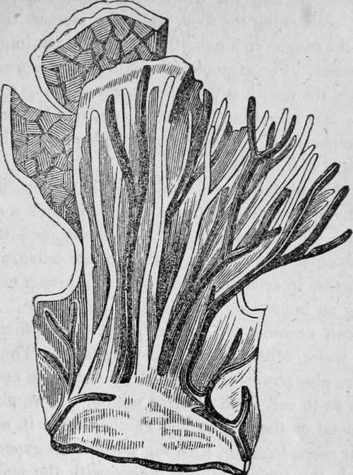

Chapter XIV. Sense Of Taste
Description
This section is from the book "Human Physiology For The Use Of Elementary Schools", by Charles Alfred Lee. Also available from Amazon: Human Physiology, for the Use of Elementary Schools.
Chapter XIV. Sense Of Taste
1. The sense of taste is allied to that of smell and touch, as it requires the immediate contact of the body with the organ where the sense resides. The quality of bodies, which it teaches us, is called sapidity. The superior surface of the tongue is the chief organ of taste ; though the general lining of the mouth and the upper part of the throat participate in the function. The tongue is chiefly composed of muscular fibres, running almost in every direction ; consequently it possesses great versatility of motion, and can be moulded into a great variety of shapes. It may be considered as a double organ, as it is formed of two symmetrical halves, whose boundaries are marked by a slight groove in its upper surface ; dividing it into right and left. From this groove a membranous partition extends down through its centre, and is attached to the froenum or bridle beneath. The tongue is not only the organ of taste but also of articulation, and also aids in mastication and deglutition.
2. The tongue is abundantly supplied with blood vessels ; and its nerves, as we have seen, are supplied from three sources. There has existed great difference of opinion among physiologists, as to which of these three is the special nerve of taste. General opinion now holds the fifth as the proper nerve of taste, as well as of sensibility ; the ninth, as that of voluntary motion ; and the eighth, as the means whereby the organ is brought into association with the throat, gullet, larynx, etc. Dr. Elliotson, however, and some others, think that the glosso pharyngeal is the nerve of taste.
3. When we examine the surface of the tongue, we find it thickly studded with fine papillae, or villi, giving the organ a velvety appearance. There are three varieties of these papillae. The first are situated near the root of the tongue, and belong to the class of mucous follicles, whose office it is to furnish this secretion. These are much larger than the others, and are called lenticular, from being shaped like a lens. It is these, together with the almonds of the throat, or ears, as they are sometimes called, which afford the mucus to lubricate the food in the act of deglutition, and also to keep the tongue moist, and in a condition for the due performance of its function.
4. The other two sets of papillae are the instruments of taste. The one set is named conical, or filiform, and consists of small nipple shaped bodies, broader at the base than the top, and scattered over the whole surface of the tongue, giving it its rough or shaggy appearance. The other set of papillae is larger, and consisting of small rounded heads, supported on short stalks, something in the shape of a mushroom, they have been called fungiform. These are but few compared with the former. These sensitive papillae are supplied with numerous blood vessels as is shown in the next cut. In order for the exercise of taste, it is necessary for the mucous membrane to be in a state of integrity, for if it be removed, we only experience a sensation of pain. The animal papillae, which abound on the sides and tip of the tongue, appear to be the most exquisitely sensible. Certain bodies seem to affect one part of the more than another. Acids, for example, act especially on the lips and teeth ; acrid bodies, like mustard and cayenne pepper, on the pharynx. We read of cases in medical works, where, after the tongue has been removed by disease, or a surgical operation, persons could still speak, spit, chew, swallow, and taste. In one case, the individual could distinguish the bitterness of sal ammonial, and the sweetness of sugar ; and Blumenbach mentions a young man, who was born without a tongue, and yet when blindfold, could distinguish between solutions of salt and aloes put upon his palate-
An upright section of one of the papillae of the tongue very greatly magnified, and split open, to show the nerves (engraved white) and the blood vessels (black.)
5. The process of taste, then, is as follows :-When a fluid is taken into the mouth, these papillae dilate and erect themselves, being endowed with the property of adapting themselves to the active or passive condition of the sense of taste. If a solid portion of food is received, it is first touched by the tip of the tongue and brought into close contact with the papillae ; when if it be dry or solid, it is carried to the back of the tongue and moistened with saliva, which thus becoming impregnated with its flavour, and flowing over the sides of the tongue, gives to the papillae a perception of the savoury juices. The saliva, or spittle, it should be recollected, is secreted by the parotid and other salivary glands, chiefly during the process of mastication, for the purpose of moistening the food, while the mucous secretion is to keep the tongue in a condition to receive the impression of sapid bodies. For example, in sickness, and especially in fevers, when the mouth is dry and parched, owing to a suppression of this secretion, the taste is entirely lost, showing that the membrane of the tongue must be kept moist in order to the preservation of the taste.
6. Insoluble substances are totally insipid, because in order to affect the nerves, the substance must be in such a state as to penetrate the spongy papillae. It is supposed that the salts which enter into the composition of the saliva, are very efficient agents in reducing substances to a proper condition for making an impression on the gustatory organ. In this way, we can account for the fact, that metals, though insoluble in water, often impart a peculiar taste. The organs of taste are also powerfully affected by metals, so applied tc the mouth as to call forth electric action. If we place one kind of metal on the tongue and another under it, and then bring their edges together, a strong sensation is experienced If we touch the surface of the tongue with the point of a wire, connected with the positive pole of a galvanic battery, a sour taste is experienced ; while the negative pole excites, an alkaline taste. These phenomena may be owing either to the electric action, disengaging from the saliva an acid in one instance, or an alkali in the other, or the electric excitement may call forth the special sensibility of the gustatory organ, in the same manner as it causes the special sensibility of the other organs.
Continue to:
Tags
humans, anatomy, skeleton, bones, physiology, organs, nerves, brain